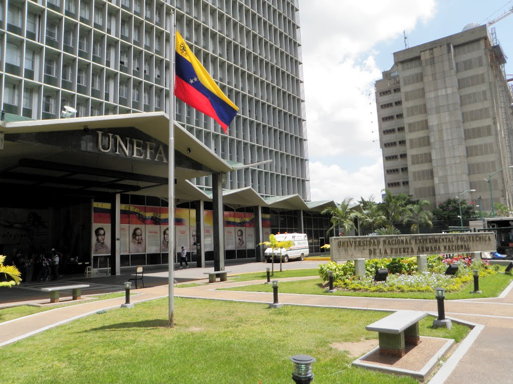

Biografia de Maykel Trejo
6 de abril de 2017
Maykel es un joven venezolano nacido en la ciudad de Barquisimeto en Venezuela el día 8 de abril del año 1992; Sus padres son Rufino Trejo y Tahis Cordero, sus hermanos Abril Castro y Daniel Trejo. Maykel realizo sus estudios de primaria y secundaria en la unidad educativa “Tamaca”,”Carmen Barragan” y “Bolivia Tovar” todas ubicadas en Barquisimeto. Estudio 5 años en la Universidad Nacional Experimental Politécnica de la Fuerza Armada Venezolana(UNEFA) donde termino su carrera como Ingeniero de Sistemas. Perteneció también a la orquesta estudiantina de la universidad donde ejerció función como guitarrista. Su pasión es el beisbol, el futbol y la música venezolana. Actualmente vive en Brasil en la ciudad de fortaleza. Maykel además es amante de los animales, y en sus ratos libres le gusta estar con su familia amigos y sus seres queridos.
Universidad Nacional Experimental Politecnica de la Fuerza Armada Venezolana(UNEFA)
31 de octubre de 2017

El 16 de agosto de 1973 por orden del Presidente de la República Dr. Rafael Caldera y resolución del Ministerio de la Defensa, se nombró una Comisión con el objeto de que se realizara y presentara un Proyecto de Creación para una Universidad Experimental de las Fuerzas Armadas, tomando como base la integración de las disciplinas de carácter universitario que en esos momentos se impartían en tres escuelas: Escuela de Ingeniería Militar del Ejército, que formaba ingenieros civiles; Escuela de Comunicaciones y Electrónica del Ministerio de la Defensa, que formaba ingenieros electrónicos, y la Escuela de Postgrado de la Armada, que formaba ingenieros mecánicos e ingenieros electricistas.
Actualmente esta Casa de Estudios se caracteriza por ser una Institución comprometida e involucrada de modo muy activo y protagónico en el desarrollo económico, social y cultural de la Nación. Para dar cumplimiento a esta misión social la Unefa, planifica acciones en función de la expansión, desarrollo y promoción de la educación en el sentido más amplio, sin excluir a ningún estrato social del país. La Unefa tiene una matrícula de más de 200.000 estudiantes, unos 11.000 alumnos de postgrado, 20.000 docentes y 12.000 trabajadores. Cuenta con 87 sedes en todo el territorio nacional.Ofrece siete licenciaturas, 14 ingenierías, siete técnicos superiores universitarios, 16 especializaciones, 19 maestrías y cuatro doctorados.